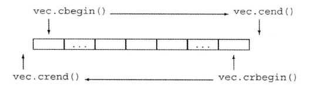

除了每个容器定义的迭代器之外，标准库在头文件iterator中还定义了额外几种迭代器。这些迭代器包括以下几种：
- 插入迭代器：这些迭代器被绑定到一个容器上，可用来向容器插入元素
- 流迭代器：这些迭代器被绑定到输入或输出流上，可用来遍历所有关联的IO流
- 反向迭代器：这些迭代器向后而不是向前移动。除了forward_list之外的标准库容器都有反向迭代器
- 移动迭代器：这些专用的迭代器不是拷贝其中的元素，而是移动它们
使用算法操作流迭代器
下面是一个例子，我们可以用一对istream_iterator来调用accumulate:1
2istream_iterator<int> in(cin),eof;
cout << accumulate(in,eof,0) << endl;
此调用会计算出从标准输入读取的值的和。
反向迭代器
反向迭代器就是在容器中从尾元素向首元素反向移动的迭代器。对于反向迭代器，递增操作会移动到前面的元素，递减操作会移动到后面的元素。
除了forward_list之外，其他容器都支持反向迭代器。
下图显示了一个名为vec的假设的vector上的4中迭代器：

虽然颠倒递增和递减运算符的含义可能看起来令人混淆，但这样做使我们可以用算法透明地向前或向后处理容器。例如，可以通过向sort传递一队反向迭代器来将vector整理为递减序：1
2sort(vec.begin(),vec.end());//按照“正常序”排列vec
sort(vec.cbegin(),vec.cend());//按逆序排列vec
迭代器类别
- 输入迭代器 （只读，不写；单遍扫描，只能递增）
- 输出迭代器（只写，不读；单遍扫描，只能递增）
- 前向迭代器（可读写；多遍扫描，只能递增）
- 双向迭代器（可读写；多遍扫描，可递增递减）
- 随机访问迭代器（可读写；多遍扫描，支持全部迭代器运算）
算法形参模式
大多数算法具有如下的4种形式之一：1
2
3
4alg(beg,end,other args);
alg(beg,end,dest,other args);
alg(beg,end,beg2,other args);
alg(beg,end,beg2,end2,other args);
alg是算法的名字，beg,end表示算法所操作的输入范围。几乎所有算法都接受一个输入范围，是否有其他参数依赖于要执行的操作。而使用dest时是基于一个假设：按其需要写入数据，不管写入多少个元素都是安全的。接受单独beg2时，将从beg2作为输入范围中的首元素，此范围的结束位置未指定，这些算法假定从beg2开始的范围与beg和end所表示的范围至少一样大。beg2,end2是表示这个算法接受两个完整指定的范围。
算法命名规则
除了参数规范外，算法还遵循一套命名和重载规范。
一些算法使用重载形式传递一个谓词
接受谓词参数来代替<或==运算符的算法，以及那些不接受额外参数的算法，通常都是重载的函数。
_if版本
接受一个元素值的算法通常有另一个不同名的版本（并不是重载的版本），这块是为了避免编译器歧义，接受谓词参数的算法都有附加的_if前缀。
区分拷贝的版本和不拷贝的版本
例如reverse函数，重排之后覆盖掉原有空间的函数及拷贝到dest中的算法具体如下所示1
2reverse(beg,end);//反转输入范围中元素的顺序
reverse_copy(beg,end,dest);//将元素按逆序拷贝到dest
一些算法同时提供_copy和_if版本，这些版本接受一个目的位置迭代器和一个谓词。